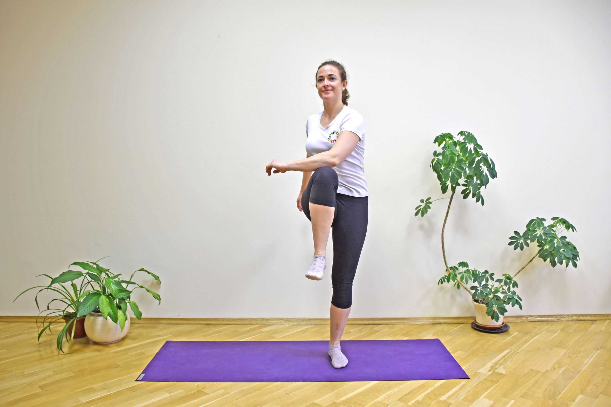
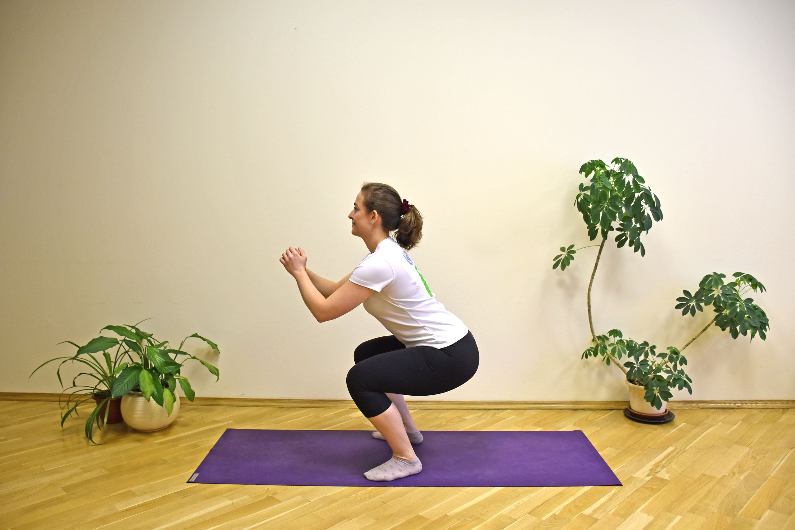
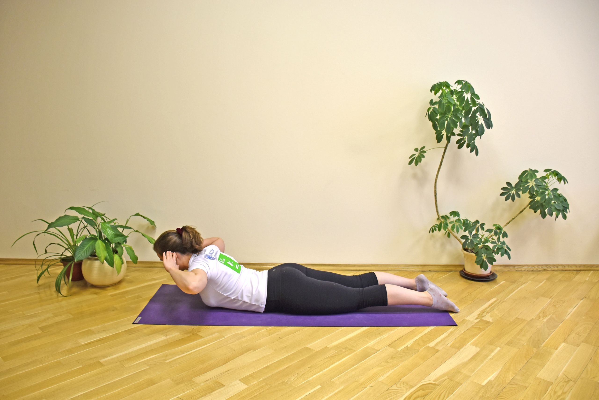
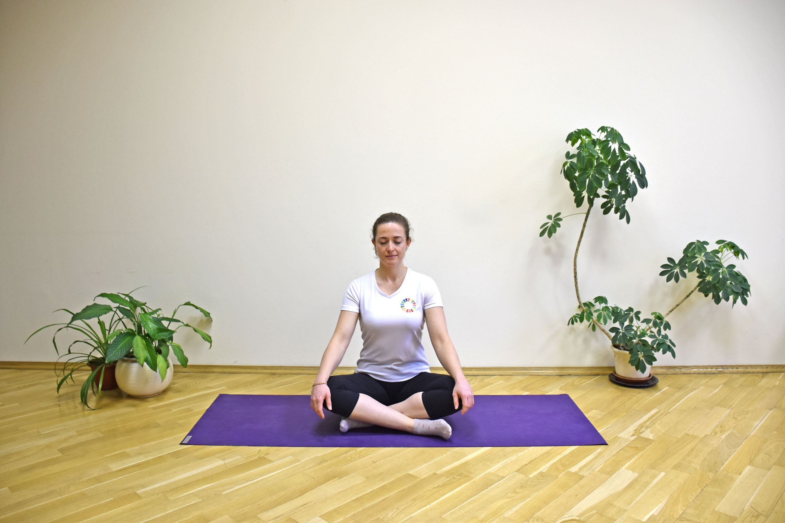
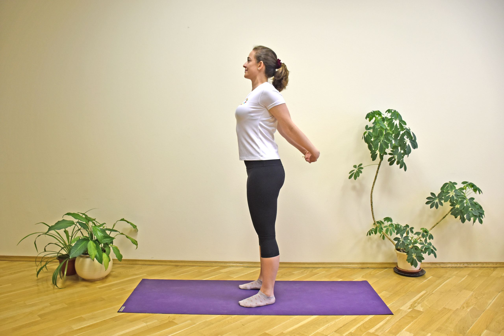
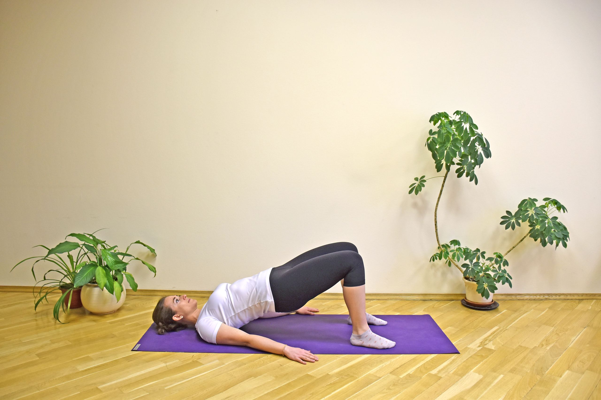
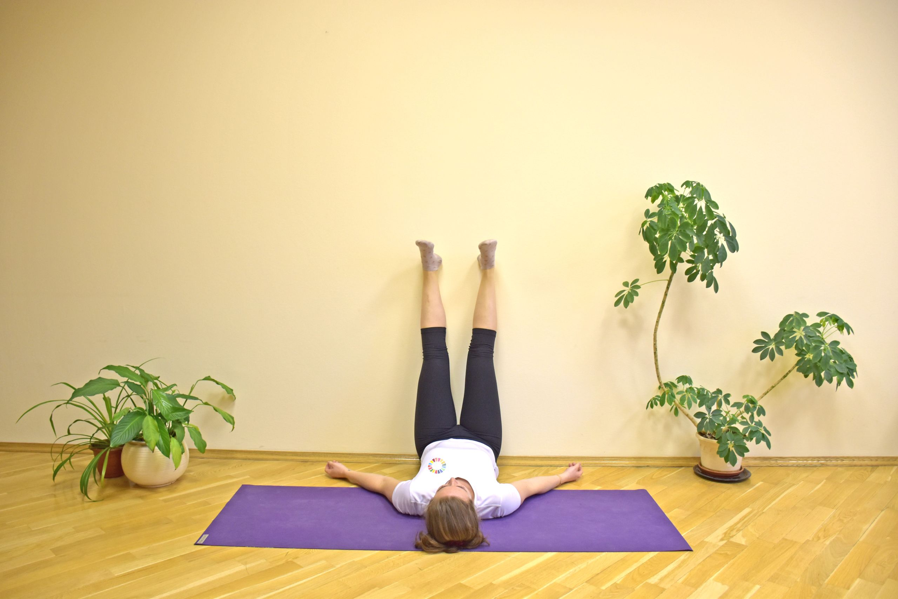

STAY PHYSICALLY ACTIVE

As new COVID-19 cases continue to emerge,fitness centres will remain temporarily closed. Staying at home for prolonged periods of time can pose a significant challenge for remaining physically active. Physical activity and relaxation techniques can be valuable tools to help you remain calm and continue to protect your health during this time. The following are some tips on how to stay active and reduce sedentary behaviour while at home in self-quarantine.
SOME HOME-BASED EXERCISES
To support individuals in staying physically active while at home, WHO has prepared a set of examples of home-based exercises.
knee to elbow
Touch one knee with the opposite elbow, alternating sides. Find your own pace. Try to perform this for 1–2 minutes, rest for 30–60 seconds, and repeat up to 5 times. This exercise should increase your heart and breathing rates.
Plank

Support your forearms firmly on the ground, with the elbows under the shoulders. Keep the hips at the level of the head. Hold for 20–30 seconds (or more, if possible), rest for 30–60 seconds, and repeat up to 5 times. This exercise strengthens your belly, arms and legs.
Squats
Place your feet at hip distance with the toes pointing slightly outwards. Bend the knees as much as feels comfortable, keeping the heels on the ground and the knees over (not in front of) the feet. Bend and stretch the legs. Perform this exercise 10–15 times (or more), rest for 30–60 seconds, and repeat up to 5 times. This exercise strengthens your legs and glutes.
Back Extension
Touch your ears with your fingertips and lift your upper body, keeping the legs on the ground. Lower the upper body again. Perform this exercise 10–15 times (or more), rest for 30–60 seconds, and repeat up to 5 times. This exercise strengthens your back muscles.
Seated meditation
Sit comfortably on the floor with your legs crossed (alternatively, sit on a chair). Make sure your back is straight. Close your eyes, relax your body and progressively deepen your breathing. Concentrate on your breath, trying not to focus on any thoughts or concerns. Remain in this position for 5–10 minutes or more, to relax and clear your mind.
Child's pose

With the knees on the ground, bring your hips to your heels. Rest your belly on your thighs and actively stretch your arms forward. Breathe normally. Hold this position for 20–30 seconds (or more). This position stretches your back, shoulders and sides of the body.
Chest Opener
Interlace your fingers behind your back. Stretch your arms and open your chest forward. Hold this position for 20–30 seconds (or more). This position stretches your chest and shoulders.
Bridge
Plant your feet firmly on the ground with the knees over the heels. Lift the hips as much as it feels comfortable and slowly lower them again. Perform this exercise 10–15 times (or more), rest for 30–60 seconds, and repeat up to 5 times. This exercise strengthens your glutes.
Legs Up the Wall
Plant your feet firmly on the ground with the knees over the heels. Lift the hips as much as it feels comfortable and slowly lower them again. Perform this exercise 10–15 times (or more), rest for 30–60 seconds, and repeat up to 5 times. This exercise strengthens your glutes.
Yoga Remedies for COVID-19
Dr. Hansaji Yogendra explains the 4 pillars of Health that yoga has - Ahar, Vihar, Achar, and Vichar and how to apply these in our daily lives.
Stay Motivated during COVID-19
Staying motivated is the key element that helps us get out of the COVID situation.